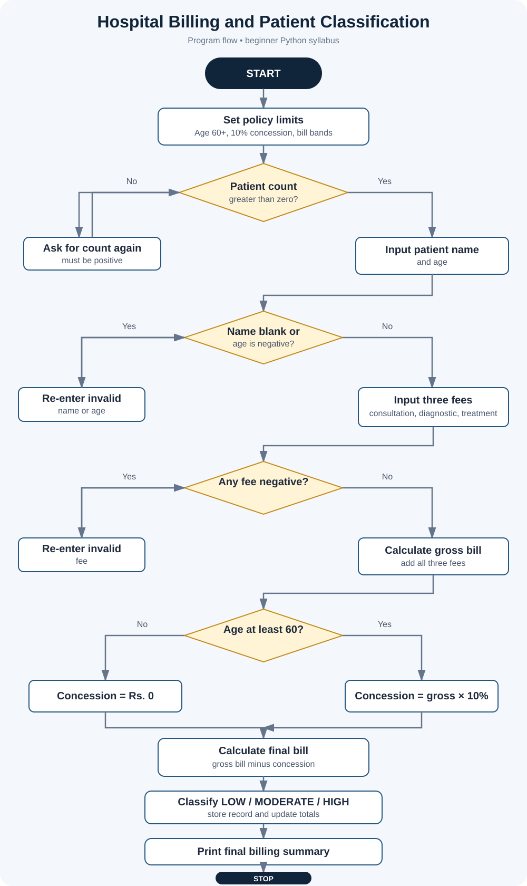
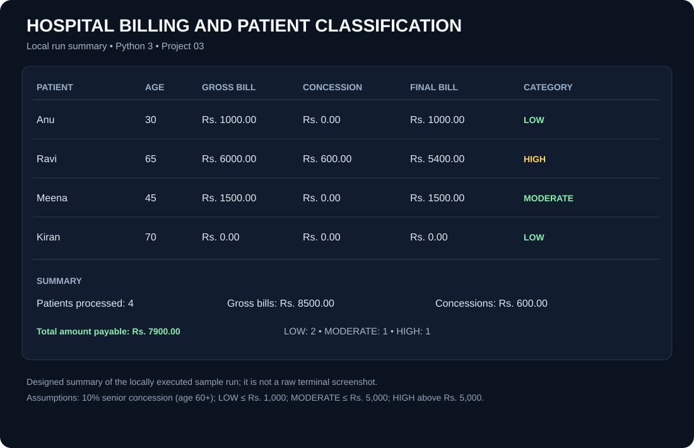

Project files
Open the Python source, project notes, algorithm, flowchart, or test results.


Assumed billing policy
- Patients aged 60 or older receive a 10% concession.
- LOW: final bill up to Rs. 1,000.
- MODERATE: above Rs. 1,000 and up to Rs. 5,000.
- HIGH: above Rs. 5,000.
- Negative ages and fees are rejected.
The case study does not define exact thresholds. These are stated educational assumptions, not a real hospital policy.
Flowchart

Sample test summary

This is a designed summary of local tests, not a raw terminal screenshot.
Run it yourself
Open a terminal in this folder and run:
python hospital_billing.py